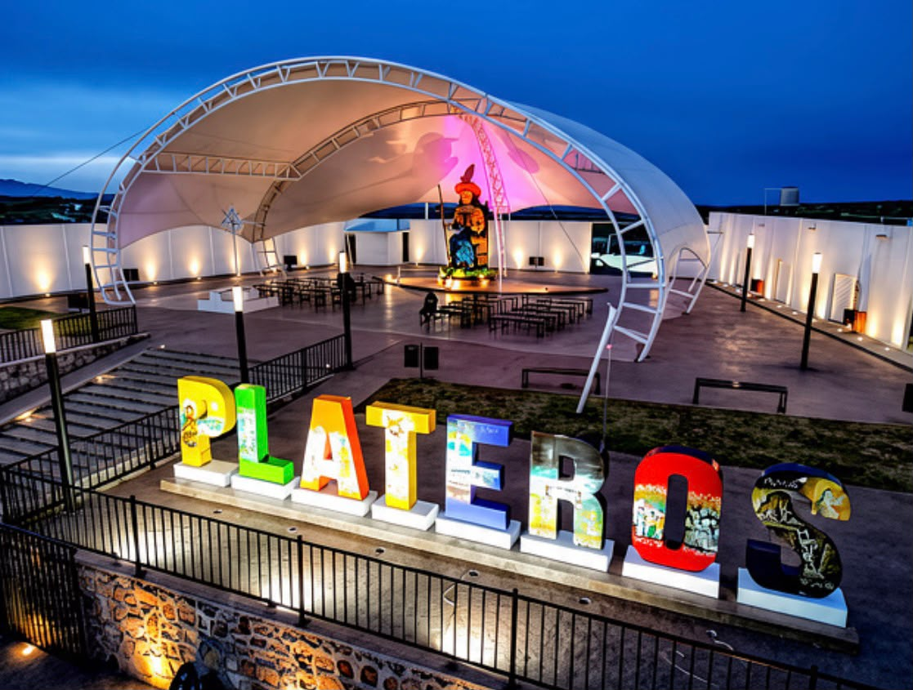
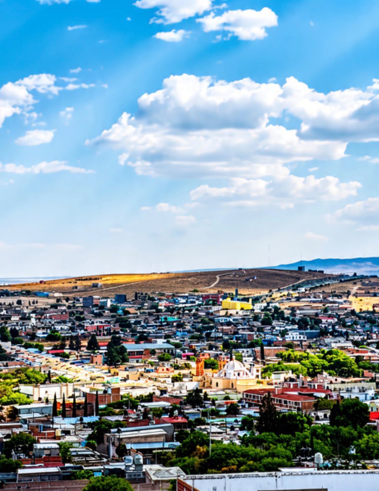

⛪ Historia
A pocos kilómetros de la ciudad de Fresnillo se encuentra Plateros, una comunidad conocida especialmente por albergar el Santuario del Santo Niño de Atocha.
El origen religioso del lugar está relacionado con el Santuario de Plateros y la devoción a Nuestra Señora de Atocha. Con el paso del tiempo, la imagen del Santo Niño de Atocha adquirió una enorme importancia entre los fieles.
La devoción creció durante generaciones hasta convertir a Plateros en un importante destino de peregrinación. Miles de visitantes llegan para agradecer favores, realizar peticiones y conocer uno de los lugares religiosos más representativos de Zacatecas.
La tradición del Santo Niño de Atocha forma parte de la identidad cultural y religiosa de la región y ha dado a Plateros reconocimiento más allá de Fresnillo.
💡 Datos interesantes
👦 El Santo Niño de Atocha es representado como un niño peregrino: suele aparecer sentado, con sombrero, bastón, una canasta y otros elementos relacionados con el viajero.
🙏 Plateros recibe peregrinos durante todo el año: personas provenientes de diferentes regiones visitan el Santuario para expresar su devoción y agradecimiento.
⛪ El Santuario es uno de los grandes referentes religiosos de Fresnillo: su importancia trasciende a la propia comunidad de Plateros.
🖼️ Los exvotos forman parte de la tradición del lugar: durante generaciones los fieles han dejado testimonios y agradecimientos relacionados con favores atribuidos al Santo Niño de Atocha.
🌎 Su devoción se extendió fuera de Zacatecas: la imagen del Santo Niño de Atocha es conocida en diferentes regiones de México y entre comunidades mexicanas en el extranjero.
📸 Galería



📍 Visita Plateros
Conoce el Santuario del Santo Niño de Atocha y uno de los destinos religiosos y culturales más representativos del municipio de Fresnillo.
Ver ubicación en Google Maps